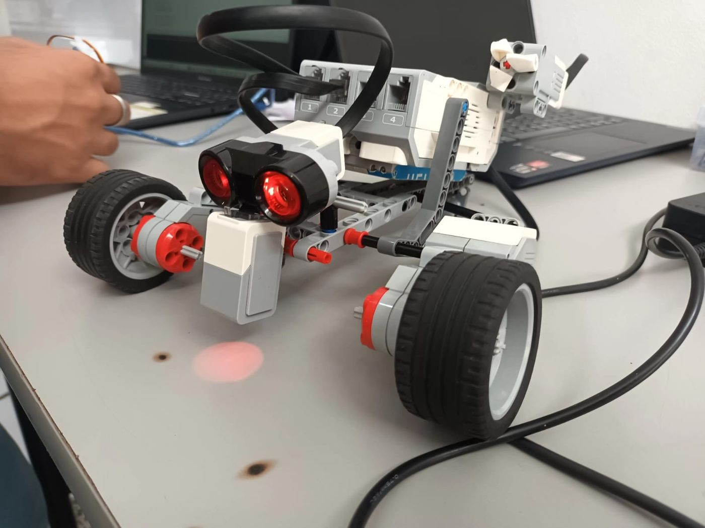
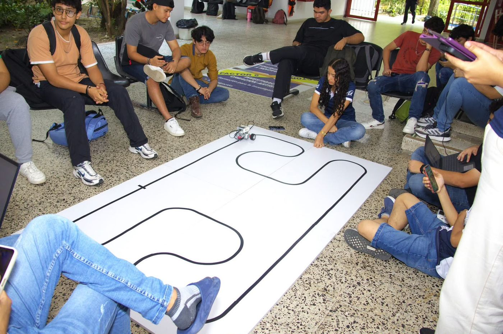

Concebir, Diseñar, Implementar, Operar
El ciclo de vida completo de un producto de ingeniería, aplicado desde el primer semestre.
Un marco para formar ingenieros que construyen
CDIO es una iniciativa internacional de reforma de la educación en ingeniería. Su premisa es que el contexto natural del aprendizaje de un ingeniero es el ciclo de vida de un producto o sistema: concebirlo, diseñarlo, implementarlo y operarlo. En este curso ese ciclo no se explica en abstracto: se recorre dos veces, primero en el reto del robot seguidor de línea y luego en el proyecto integrador final.
Concebir
En esta etapa los estudiantes no inventan el problema: lo comprenden, lo analizan y organizan el trabajo del equipo bajo las restricciones dadas.
Conceptos de arranque
¿Qué es un sistema? Un conjunto de partes que trabajan juntas para lograr un objetivo, bajo el esquema entrada → proceso → salida.
¿Qué es un sensor? Un dispositivo que mide una variable física y la convierte en una señal eléctrica que el sistema puede entender.
¿Qué es un actuador? Un dispositivo que convierte una señal eléctrica en una acción física.
¿Qué es un seguidor de línea? Un sistema que detecta una línea en el suelo y ajusta su movimiento para seguirla automáticamente. Se usa en industria, logística y robótica educativa.
Objetivos de la etapa
- Comprender el reto del seguidor de línea tipo velocista.
- Analizar las restricciones técnicas: dimensiones y piezas disponibles.
- Definir una estrategia de diseño orientada a velocidad y eficiencia.
- Asignar roles dentro del equipo.
Entregable
Documento de concepción de máximo dos páginas con: nombre del equipo, lista de integrantes y roles, descripción del reto en palabras del equipo, estrategia general de diseño y criterios de éxito para la competencia.
Diseñar
Aquí se responde una sola pregunta: ¿cómo vamos a construir la solución? Los equipos desarrollan el diseño digital completo del robot antes de tocar una sola pieza.
Herramientas obligatorias
Bricklink Studio 2.0 para el diseño mecánico y estructural del robot.
Open Roberta Lab para la programación del brick EV3 mediante bloques gráficos.
El diseño debe cumplir
- Dimensiones máximas de 20 cm × 20 cm.
- Uso exclusivo de piezas disponibles en el kit EV3.
Entregables
- Archivo digital del diseño en Studio 2.0, nombrado
CONSTRUCCION_GX. - Imagen renderizada del robot, nombrada
RENDER_GX. - Lista de piezas (BOM) en PDF, nombrada
PIEZAS_GX. - Tabla de costos en Excel con el costo total, nombrada
COSTOS_GX. - Programa en bloques del EV3 exportado desde Open Roberta Lab en XML, nombrado
PROGRAMA_GX.
Los cinco archivos se comprimen en una carpeta llamada DISEÑO_GX, donde X es el número del grupo. La lista de piezas define las únicas piezas que el equipo puede usar para construir: si necesitan más, deben reportarlo para sumarlo a los costos.
Implementar
Los equipos construyen físicamente el robot utilizando el kit EV3 asignado, siguiendo el diseño que ya fue aprobado.
Actividades
- Ensamble del robot según el diseño aprobado.
- Ajustes mecánicos necesarios.
- Verificación del cumplimiento de dimensiones.
Entregable
Robot físico ensamblado y funcional.

Operar
Los robots participan en una competencia de seguimiento de línea tipo velocista. La validación no es una nota en papel: es la pista.

Reglas generales
- El robot debe seguir correctamente la línea.
- Gana el equipo que complete el recorrido en el menor tiempo.
- El robot debe cumplir la restricción de 20 cm × 20 cm.
Calibración previa
- Ajustar los valores de blanco y negro del sensor según la iluminación del salón.
- Verificar la estabilidad del seguimiento antes de la ronda oficial.
Cuatro semanas, cuatro etapas
| Semana | Etapa | Entregable |
|---|---|---|
| Semana 1 | Concepción | Documento de concepción |
| Semana 2 | Diseño | Diseño digital y tabla de costos |
| Semana 3 | Implementación | Robot físico |
| Semana 4 | Operación | Competencia |